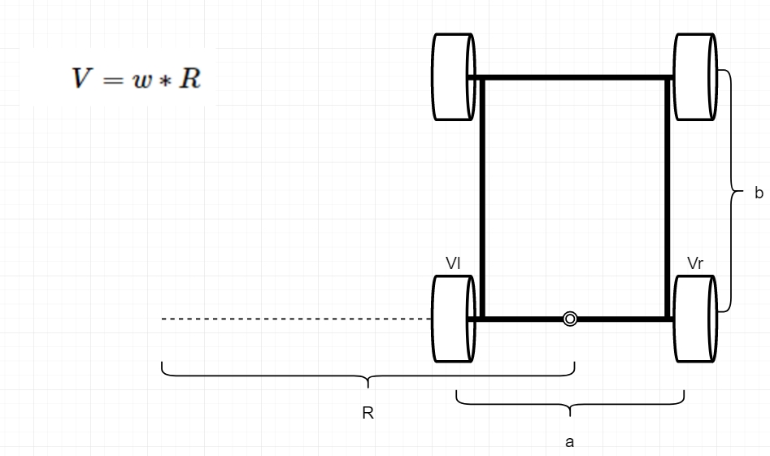
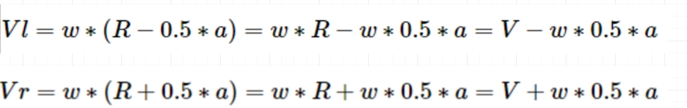
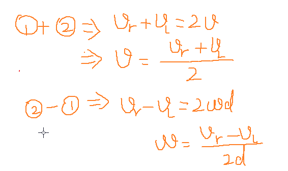

差速两轮驱动¶
本章我们主要来给大家介绍差速两轮驱动结构.两轮差速转向结构,在学习这个内容之前我们需要理解一个公式:V=\omega \cdot r
由于小车是一个刚体,所以轮子的每个位置的角速度都是相同的, 而由于转弯半径不同,所以每个轮子的线速度会有所不同.

速度推导左右轮转速¶
已知线速度为V,角速度为:w 那么左右轮速度应该等于多少呢?

左右轮转速推导速度¶
已知左右轮的速度,我们推导当前小车前进的线速度和角速度
小车线速度公式:
v=\dfrac {v_{r}+v_{l}}{2}
小车角速度公式:
\omega =\dfrac {v_{r}-v_{l}}{2d}
推演的过程如下:

示例代码¶
电机转动的目标速度¶
1 2 3 4 5 6 | |
电机当前的速度m/s¶
1 2 | |